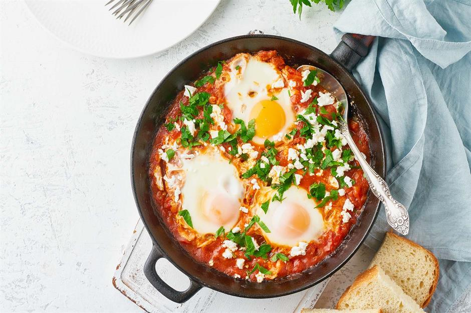
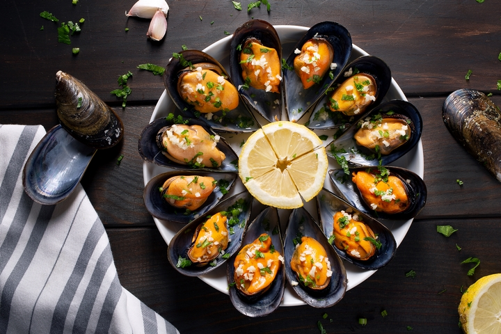

BLACK PEARL RESTURANT
THE black pearl resturant serves only the best and exquisite meals to your liking
from the Shukahuka to the Goulash.
why travel the world to eat a particular when you can it right here
at the black pearl resturant
OUR MENU

- SHUKAHUKA
-
Claimed as one of their own throughout North Africa and the Middle East,
untangling the web of where shakshuka is from is simply impossible.
All we know is that it's an incredibly tasty and filling dish that's become a popular breakfast and brunch meal throughout the world.
Literally translating as a mixture, it's usually cooked by reducing down tomatoes,
onions and a range of spices before the eggs are poached on top.

Moules Marinières
This French dish from the west of France can be made in about 15 minutes.
It’s made with fresh, inexpensive ingredients and is great for dipping bread since the mussels produce a briny liquid when cooked.
To make this dish, remove the mussels immediately after cooking and finish the dish with butter, parsley, lemon juice and either mayonnaise or crème fraiche.
You’re left with a rich, creamy sauce that only took 15 minutes to make!